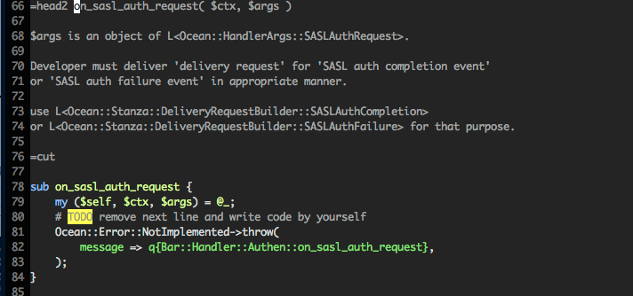
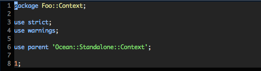
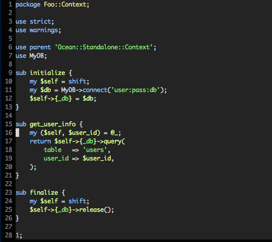
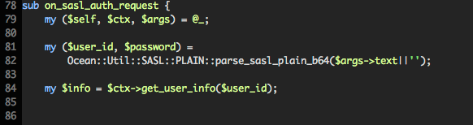
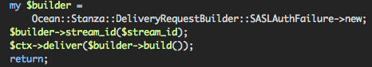
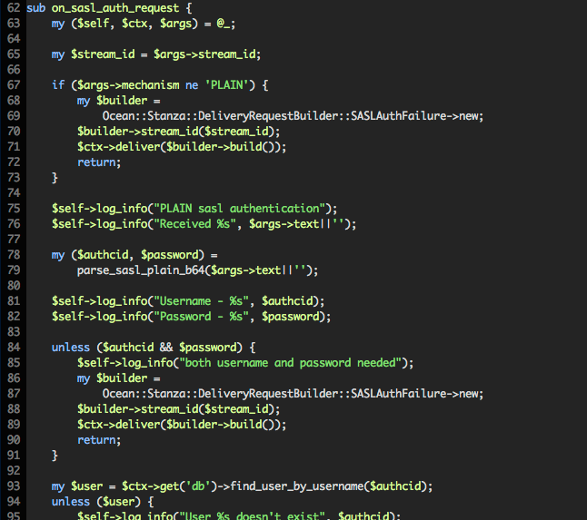

イベントの種類をイベントカテゴリと呼び、Oceanでは次のようにイベントを分類しています。
| カテゴリ名 | 概要 |
|---|---|
| Node | サーバーに関するイベント。起動、終了、タイマー |
| Authen | 認証に関するイベント |
| Connection | 接続情報に関するイベント |
| People | 友人リストやプロフィール情報などの要求イベント |
| Message | メッセージ配信に関するイベント |
| P2P | コネクション間でのダイレクトなやりとりを中継するためのイベント |
| Room | グループチャットに関するイベント |
イベントのカテゴリ毎に、そのイベントのハンドラメソッドを実装するモジュールが切り分けられます
プロジェクトテンプレート生成時に、例えばハンドラネームスペースをFoo::Handlerにした場合は、
の各モジュールが自動で生成され、これらの中に具体的な実装を書き込んでいくことになります。
全てのイベントハンドラはon_を接頭語にします。
引数は二つあり、一つ目はContextオブジェクトで、二つ目はHandleArgsオブジェクトになります。
この二つについては後ほど解説しますので、まずは雰囲気をつかむために実際のコードを見てみます。
Oceanサーバーでは、起動時にコンフィグファイルで指定されたContextクラスのオブジェクトを生成し、そのオブジェクトのinitializeメソッドを呼び出します。
また、サーバー終了時にはfinalizeメソッドを呼び出します。
各イベントハンドラが呼び出されるときには必ず、このContextオブジェクトが渡されます。
Contextクラスは、プロジェクトテンプレート作成時に、Ocean::Contextを継承しただけの状態で生成されますので、そこに拡張を加えていくとよいでしょう。
一例として、initializeメソッドでデータベースへの接続を行い、その接続情報を保持し、finalize時に解放するということが出来ます。
各イベントハンドラからは、このContextを経由して、データベースの情報を取得することが出来るようになります。
Contextの例
呼び出し側の例
また、Contextにはget/setメソッドがあり、単純なstashとしても利用できます。
ほとんどのイベントでは、配送処理が必要になります。
Request/Responseタイプのイベントでは、要求を行ったユーザー本人に結果を返します。
メッセージは、宛先となるユーザーにメッセージを配送します。
プレゼンス変更は、そのユーザーの友人全員にブロードキャストします。
これらのイベントは移送には、DeliveryRequestを利用します。
DeliveryRequestを生成するためには、それぞれのイベント専用のDeliveryRequestBuilderが用意されています。
DeliveryRequestBuilderを利用してビルドしたものを、Contextのdeliverメソッドに渡します
次のコードは、SASL認証失敗レスポンスを配送するときの例になります。
イベントハンドラのオーソドックスな処理については、スタンドアロンプロジェクトでの動作を参考にするとよいでしょう。
スタンドアロンプロジェクトで利用されるコンテキストやハンドラは、Ocean::Standalone名前空間下のモジュールを継承しています。
Ocean::Standalone::Contextや、Ocean::Standalone::Handler::XXXなどを読むと、基本的な動作について、一通りの理解が得られます
例えばOcean::Standalone::Handler::Authenは次のようになっています。
このように、スタンドアロン用のハンドラには、標準的な動作で実装がされています。